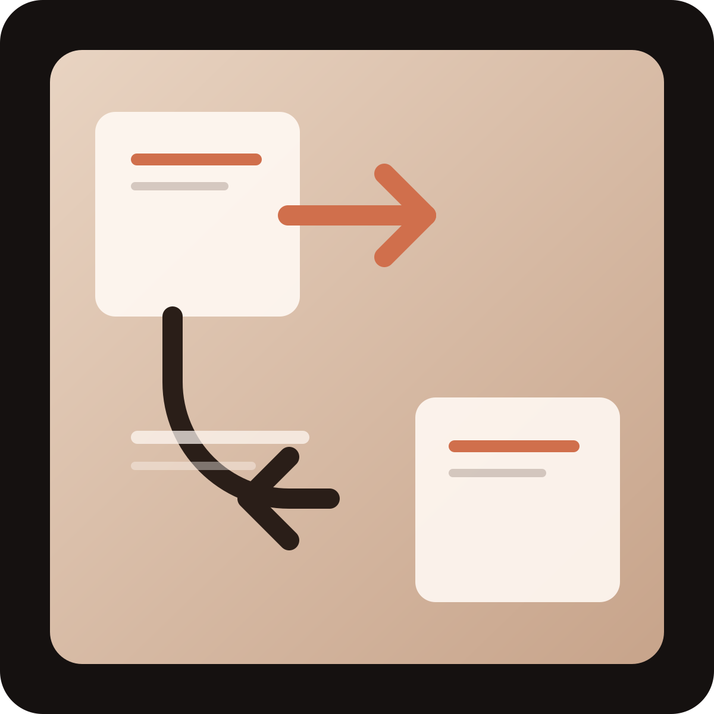
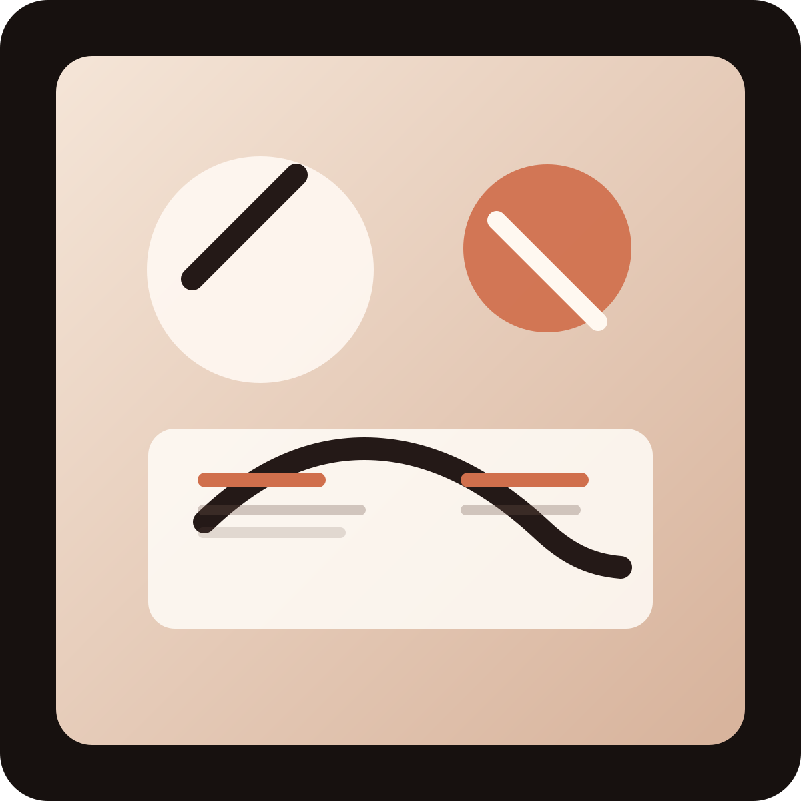

01
What I Learned Supporting Managed WordPress Hosting
A practical look at the common issues users face and how support work builds product intuition.
Blog
A growing collection of writing about support, hosting, testing, usability, and the kind of hands-on work that shapes better product experiences.
01
A practical look at the common issues users face and how support work builds product intuition.

02
Notes on the technical and communication challenges involved in helping users move sites with confidence.
03
Thoughts on how bug verification and QA thinking improve support quality and product reliability.

04
A personal story about moving across disciplines and how design thinking still shapes technical work.
05
A future post about subtle improvements that reduce friction and make software easier to trust.